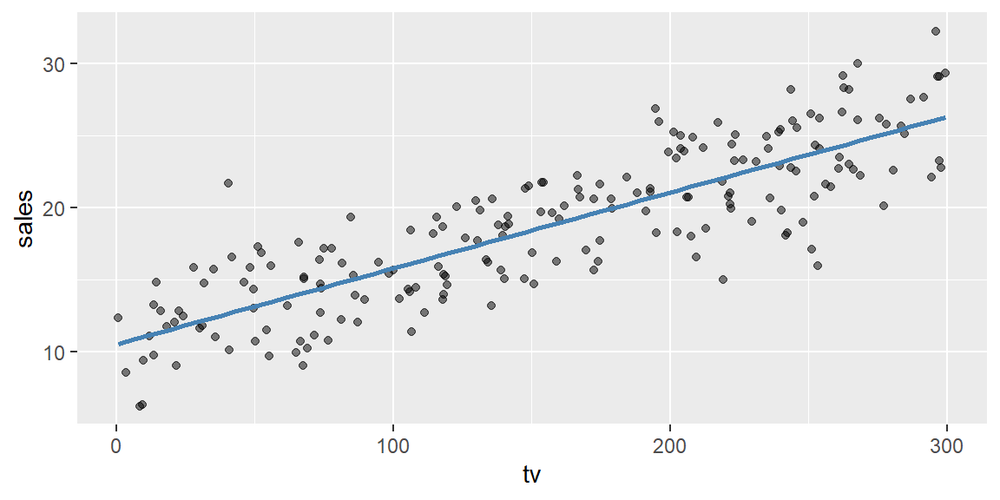
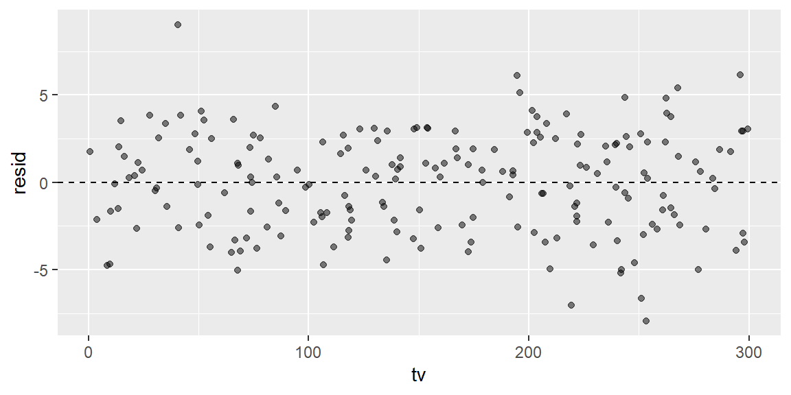

library(tidyverse)
library(modelr)23 Session 23: Statistical modeling I: simple linear regression
Objectives
- Understand why we model data. Statistical models provide a low-dimensional summary of a dataset by partitioning it into patterns and residuals. They are not meant to be “true” representations of the world; they are useful approximations, and part of using one well is knowing where it stops being useful.
- Define model families and fit a linear model. A model family is an equation expressing a pattern (such as a straight line) with parameters that can vary. Fitting a model means finding the parameter values that make the model closest to the data.
- Use formulas and
lm()to specify models. In R, formulas likey ~ xspecify linear models;lm()finds the best-fitting intercept and slope, andmodel.matrix()shows exactly how a formula gets translated into numbers, including for a categorical predictor. - Interpret coefficients in simple linear regression. In \(\widehat{y} = b_0 + b_1 x\), the slope \(b_1\) is the change in the predicted response for a one-unit increase in the predictor, and the intercept \(b_0\) is the predicted response when the predictor is zero. Recognize that swapping which variable is predicted and which is the predictor does not just flip the sign or invert the slope.
- Visualize predictions and residuals. Use
modelr::data_grid()andadd_predictions()to draw a fitted line, andadd_residuals()to compute residuals. Recognize that a good-looking summary statistic (like \(R^2\)) is not a substitute for actually looking at the data and the residuals.
Notes
Why do we model?
Exploratory data analysis reveals patterns, but a strong pattern can obscure a subtler one hiding underneath it, exactly as Session 22’s diamonds example showed. A statistical model provides a simple, low-dimensional summary of a dataset: it captures a dominant pattern, and the residuals are whatever is left over, the deviation between the observed data and the model’s predictions. George Box’s famous line applies directly here: all models are wrong, but some are useful. The goal isn’t to find the “true” model (there usually isn’t one), but to choose a model family that captures the main trend well enough to be worth using, and to use the residuals to see what it misses.
Model families and fitting
A model family is an equation with parameters that can vary; a straight-line family is \(y = a_1 x + a_2\), where \(x\) and \(y\) are variables from the data and \(a_1, a_2\) are parameters to be determined. Fitting the model means finding the specific parameter values that make this particular member of the family as close as possible to the data, typically by minimizing the root-mean-squared distance between observed and predicted values. The fitted model is whichever member of the family comes closest by that measure.
Linear models and formulas
R expresses a linear model as a formula: y ~ x means “model y as a linear function of x,” and R adds an intercept automatically unless told not to. lm() fits the model, translating the formula into \(y = b_0 + b_1 x\) and finding \(b_0\) and \(b_1\) by least squares.
ads <- read_csv("data/advertising.csv")
sales_model <- lm(sales ~ tv, data = ads)
coef(sales_model)(Intercept) tv
10.50404599 0.05271145 Formulas extend naturally to more than one predictor (y ~ x1 + x2), interactions (y ~ x1 * x2), and transformations; model.matrix() shows exactly how R turns a formula into the actual numeric matrix used for fitting, which matters more than it sounds like it should the moment a predictor is categorical rather than numeric (see Example 22.4).
Interpreting coefficients
A fitted simple linear model has the form \(\widehat{y} = b_0 + b_1 x\). The slope \(b_1\) says how much the predicted response changes for a one-unit increase in the predictor; the intercept \(b_0\) is the predicted response when the predictor equals zero, which is sometimes meaningless (a predictor that’s never actually zero in real data, like an ad budget) and sometimes exactly the quantity you care about.
coef(sales_model)(Intercept) tv
10.50404599 0.05271145 Here, each additional $1,000 spent on TV advertising is associated with about 53 dollars more in sales, and a campaign with no TV spending at all is predicted to sell around 10.5 units already, presumably from other channels not in this particular model. That’s an association, not a guarantee of causation: this model alone can’t rule out some other factor (overall marketing budget, seasonality, a competitor’s price change) driving both TV spending and sales together.
Predictions and residuals
After fitting a model, look at both its predictions and its residuals, not just its coefficients. data_grid() builds an evenly spaced grid of predictor values, and add_predictions() computes the fitted line across that grid, which is what you actually plot alongside the real data.
grid <- ads |> data_grid(tv = seq_range(tv, 50)) |> add_predictions(sales_model)
ggplot(ads, aes(x = tv, y = sales)) +
geom_point(alpha = 0.5) +
geom_line(data = grid, aes(y = pred), color = "steelblue", linewidth = 1)
add_residuals() attaches each observation’s residual (observed minus predicted) directly to the original data, ready to plot.
ads <- ads |> add_residuals(sales_model)
ggplot(ads, aes(x = tv, y = resid)) +
geom_point(alpha = 0.5) +
geom_hline(yintercept = 0, linetype = "dashed")
Residuals scattered randomly around zero, with no obvious remaining pattern, are a sign the model has captured the main trend; a residual plot with its own visible shape (a curve, a funnel, a cluster) is telling you the straight-line family missed something systematic, which no amount of staring at the coefficients alone would reveal (see Example 22.1).
Fringe cases and common pitfalls
ExampleExample 22.1
Four datasets can share nearly identical regression coefficients and \(R^2\), and look nothing alike.
data(anscombe)
for (i in 1:4) {
x <- anscombe[[paste0("x", i)]]
y <- anscombe[[paste0("y", i)]]
m <- lm(y ~ x)
cat("Dataset", i, "- slope:", round(coef(m)[[2]], 2),
" intercept:", round(coef(m)[[1]], 2),
" R-squared:", round(summary(m)$r.squared, 3), "\n")
}Dataset 1 - slope: 0.5 intercept: 3 R-squared: 0.667
Dataset 2 - slope: 0.5 intercept: 3 R-squared: 0.666
Dataset 3 - slope: 0.5 intercept: 3 R-squared: 0.666
Dataset 4 - slope: 0.5 intercept: 3 R-squared: 0.667 All four of Francis Anscombe’s famous constructed datasets fit a line with essentially the same slope (about 0.5), the same intercept (about 3), and the same \(R^2\) (about 0.67), and yet the four scatterplots behind these numbers look completely different: one is a clean linear relationship, one is a clear curve that a straight line badly misrepresents, one is a perfect line thrown off by a single outlier, and one is a vertical cluster of identical x-values plus one point far to the side, entirely driving the whole fit. Every one of the numeric summaries this session teaches you to compute agrees across all four; only actually plotting the data (and the residuals) reveals that three of the four have no business being described by a straight line at all. Never trust a regression’s summary statistics without also looking at the data.
ExampleExample 22.2
Predicting outside the range of your data is still just arithmetic, and arithmetic doesn’t know when to stop.
range(ads$tv) # the actual range of TV budgets observed[1] 0.81 299.47max(ads$sales) # the largest sales figure actually observed[1] 32.25predict(sales_model, tibble(tv = 5000)) 1
274.0613 No advertiser in this dataset spent anywhere near $5,000,000 on TV (the real values are recorded in thousands, and the largest is under $300,000), and no observed campaign ever sold close to 274 units, yet the model happily returns a specific-looking number anyway, because a straight line is defined for every real number, not just the range where you actually have data to justify it. Nothing stops predict() from extrapolating; it’s up to you to notice you’ve walked off the edge of what the model was actually fit to describe. A prediction is only as trustworthy as the data that produced it, and that trust doesn’t extend past the data’s own range without a much stronger argument than “the line kept going.”
ExampleExample 22.3
Regressing y on x and regressing x on y are not inverse operations of each other.
model_yx <- lm(sales ~ tv, data = ads)
model_xy <- lm(tv ~ sales, data = ads)
coef(model_yx)[["tv"]] # slope predicting sales from tv[1] 0.05271145coef(model_xy)[["sales"]] # slope predicting tv from sales[1] 13.541481 / coef(model_yx)[["tv"]] # what the second slope would be if it were just "the inverse"[1] 18.97121It’s tempting to assume that if a $1,000 increase in TV spending predicts a certain increase in sales, then reversing the question (“how much TV spending predicts a one-unit increase in sales?”) should just be the reciprocal of the first slope. It isn’t: least squares regression minimizes vertical distance to the line in whichever direction you’re predicting, so fitting sales ~ tv and fitting tv ~ sales genuinely optimize two different quantities and land on two different lines, not the same line viewed from two directions. Always be explicit about which variable you’re actually trying to predict from which; the two directions are different models, not the same one written two ways.
ExampleExample 22.4
An ordered categorical predictor gets polynomial contrasts by default, which can make coefficients nearly unreadable.
class(diamonds$cut) # cut is stored as an ORDERED factor[1] "ordered" "factor" model.matrix(price ~ cut, data = diamonds) |> head(2) (Intercept) cut.L cut.Q cut.C cut^4
1 1 0.6324555 0.5345225 0.3162278 0.1195229
2 1 0.3162278 -0.2672612 -0.6324555 -0.4780914Because cut is an ordered factor, R defaults to polynomial contrasts (labeled .L, .Q, .C, and so on, for linear, quadratic, cubic trends across the ordered levels) rather than a simple “compared to the reference level” encoding, and the resulting coefficients answer a genuinely different, harder-to-explain-out-loud question than “how much more does an Ideal-cut diamond cost than a Fair one.” Converting to a plain (unordered) factor first restores the more intuitive encoding:
diamonds_plain <- diamonds |> mutate(cut = factor(cut, ordered = FALSE))
model.matrix(price ~ cut, data = diamonds_plain) |> head(2) (Intercept) cutGood cutVery Good cutPremium cutIdeal
1 1 0 0 0 1
2 1 0 0 1 0Now each column is a simple 0/1 indicator for one specific cut, compared against the reference level (Fair, the level R drops), and a coefficient like “Ideal” directly answers “how much more, on average, does an Ideal-cut diamond cost than a Fair-cut one.” Before fitting a model with a categorical predictor, check class() on that column; whether it’s an ordered or a plain factor changes what the coefficients actually mean, not just how they’re labeled.
Recap
| Term | Definition |
|---|---|
| Model family | An equation with parameters that can vary, such as \(y = a_1 x + a_2\) for all possible lines. |
| Fitting | Finding the specific parameter values that make a model family as close as possible to the data. |
lm(y ~ x) |
Fits a straight-line model predicting y from x by least squares. |
| Slope / intercept | The predicted change in y per one-unit increase in x, and the predicted y when x is zero. |
| Residual | The difference between an observed value and the model’s prediction for it. |
data_grid() / add_predictions() |
Build an evenly spaced grid of predictor values and compute the model’s predictions across it, ready to plot as a fitted line. |
add_residuals() |
Attaches each observation’s residual to the original data. |
| Extrapolation | Predicting for input values outside the range the model was actually fit on; always computable, not always meaningful. |
model.matrix() |
Shows exactly how a formula (including a categorical predictor’s contrasts) is translated into the numeric matrix lm() actually fits. |
| Ordered vs. unordered factor | Changes a categorical predictor’s default contrast coding from polynomial (.L/.Q/.C) to simple reference-level comparisons. |
Check your understanding
NoteProblems
- What does it mean to “fit” a model, and what quantity does
lm()minimize when fitting a straight line? - Two models report the same \(R^2\) and nearly the same slope and intercept. Does that guarantee both were fit to data with a similar shape? Explain, using this session’s example as evidence.
- A model trained on houses between 800 and 3,500 square feet is used to predict the price of a 10,000 square foot house. Is this prediction necessarily wrong? Is it necessarily trustworthy? Explain the distinction.
- You fit
lm(y ~ x)and separatelylm(x ~ y)on the same two columns. A classmate expects the second model’s slope to be the reciprocal of the first. Explain why that expectation is wrong. - You fit a model with an ordered factor as a predictor and get coefficients labeled
.L,.Q, and.Cinstead of one coefficient per category. What are your two options if you want coefficients that directly compare each category to a reference level?
TipSolutions
Fitting a model means searching within a model family (such as “all possible straight lines”) for the specific parameter values that make that model as close as possible to the observed data.
lm()minimizes the sum of squared residuals, the squared vertical distances between the observedyvalues and the line’s predicted values.No. Anscombe’s quartet is the standard counterexample: four datasets with essentially identical slopes, intercepts, and \(R^2\) values look completely different when actually plotted, ranging from a clean linear relationship to a curve to a fit dominated entirely by a single outlier. Matching summary statistics describe how well a line was fit by one particular numeric criterion; they say nothing about whether a line was the right kind of model to fit in the first place.
It is not necessarily wrong in the sense that the arithmetic is perfectly valid;
predict()will happily return a number. It is also not trustworthy, because the model was never fit on any data anywhere near 10,000 square feet, so there is no evidence the relationship it learned even continues to hold at that scale. The distinction is between “a number came out” and “there is a basis for believing that number.”Least squares regression minimizes the vertical distance to the fitted line in whichever direction is currently being predicted, so
lm(y ~ x)andlm(x ~ y)are optimizing two different objectives and generally produce two different lines, not the same line described from two different directions. Reversing which variable is the predictor and which is the response changes what is actually being modeled, not just how the answer is reported.Explicitly convert the predictor to an unordered factor before fitting, for example with
factor(x, ordered = FALSE), which switches R’s default contrasts from polynomial to simple reference-level comparisons; alternatively, set thecontrastsoption for that variable directly (contrasts(x) <- "contr.treatment") to the same effect without changing the factor’s ordered status.